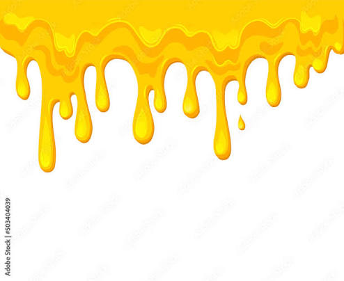

<!DOCTYPE html>
<html>
<head>
  <title>How Cheese Is Made for The Triple Nacho</title>
<link rel="stylesheet" href="styles.css">
</head>
<body>
</body>
</html>
<nav>
    <a href="index.html">The Triple Nacho</a>
    <a href="page2.html">The History Of The Triple Nacho</a>
    <a href="page3.html">Types Of The Triple Nachos</a>
    <a href="page4.html">How Cheese Is Made for The Triple Nacho</a>
    <a href="page5.html">Triple Nacho Security</a>
    <a href="page6.html">Triple Nacho Amir Delivery Service</a>
    <a href="page7.html">Conclusion/Works Cited</a>
</nav>
<h1>How Cheese is Made For The Triple Nacho</h1>
<p>This signature cheese sauce is engineered specifically for teenage tastebuds—bold, highly snackable, and completely non-alcoholic. It is designed to hit that perfect sweet spot between a late-night street food craving and a high-energy flavor kick. The blend honors the original trio of Aiden, Christopher, and Alexander with a modern, hype-worthy twist.</p>
<p>The Bombing Cheese Trio: A base of ultra-melty Pepper Jack , Sharp Cheddar, and a layer of creamy American cheese to ensure it stays perfectly smooth, stretchy, and highly dip-able.</p>
<p>The Hype Liquid Base: Instead of beer, this recipe uses a blend of sweet cream milk and fresh salsa verde juice. This creates an incredibly tangy, rich base that keeps the sauce completely family-friendly while packing an addictive, savory punch.</p>
<p>The Alexander Flavor Boost: To celebrate Alexander's bold style, the queso is hit with an infusion of crushed Takis dust, garlic powder, and a swirl of mild hot honey. It gives the cheese a vibrant color, a subtle sweet-and-spicy heat, and a flavor profile that stands out completely from boring, standard restaurant cheese</p>

